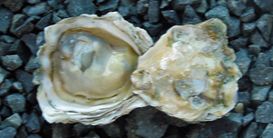
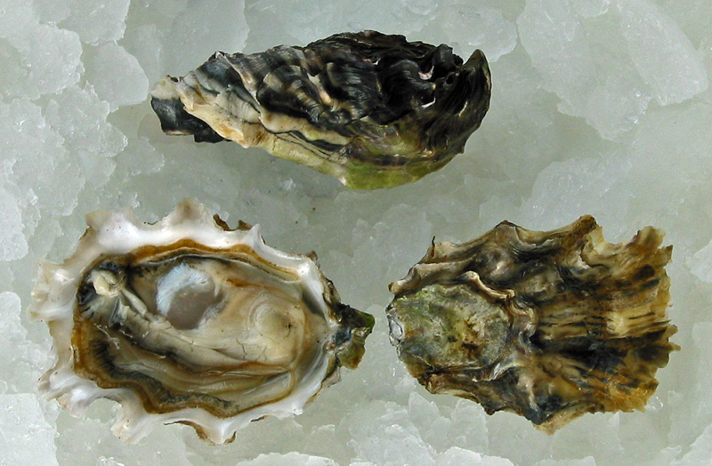
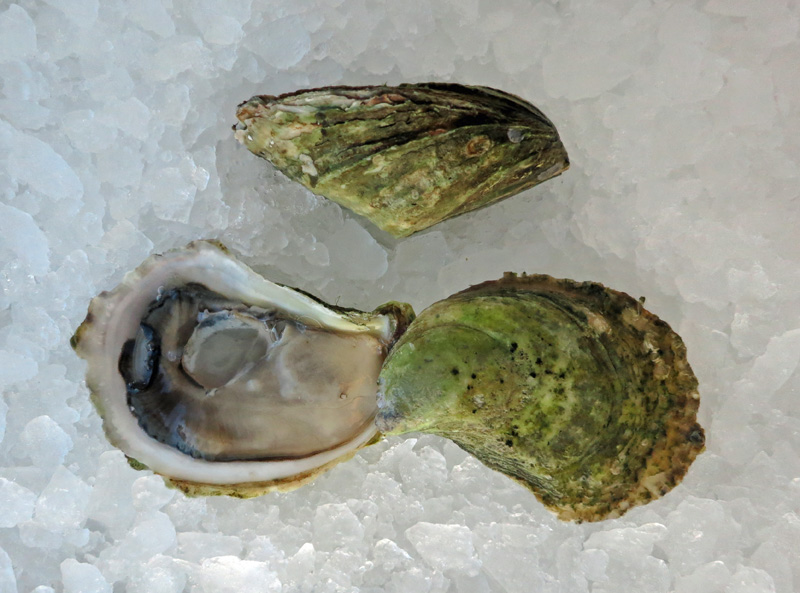
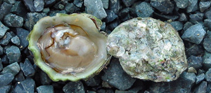
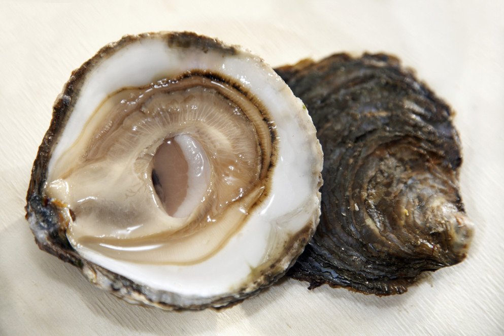

There are over 100 varieties of oyster. That's a lot! However, they all stem from 5 main types.
Kumamoto
Pacific
Atlantic
Olympia
European Flats
Images
Kumamoto Oyster
Kumis or Kumos are relatively small oysters. They have a creamy texture and a mild sweet flavor.
Pacific Oyster
Pacific oysters are sweeter and have less of a briny flavor compared to Atlantic oysters. However, they do have a much more wide flavor spectrum.
Atlantic Oyster 
Atlantic oysters are much more brinier in taste compared to other oyster. These also have a crisp and firm texture with a clean finish.
Olympia Oyster
The Olympia oysters are the smallest. The flavor profile is described as a sweet celery with a metallic finish. The texture of these is creamy like Kumamotos.
European Flat
European flats are not for the novice oyster eaters. These have a firm and crunchy texture and intense mineral flavors with hints of seaweed and a gamey finish.